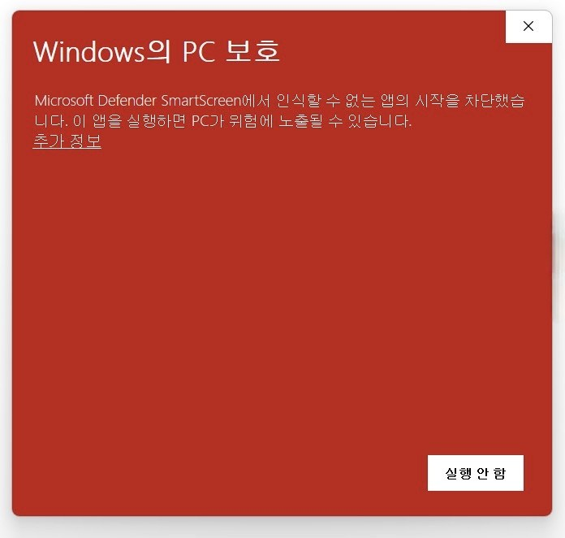
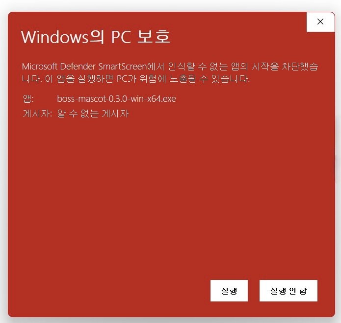
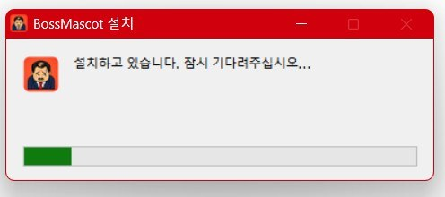
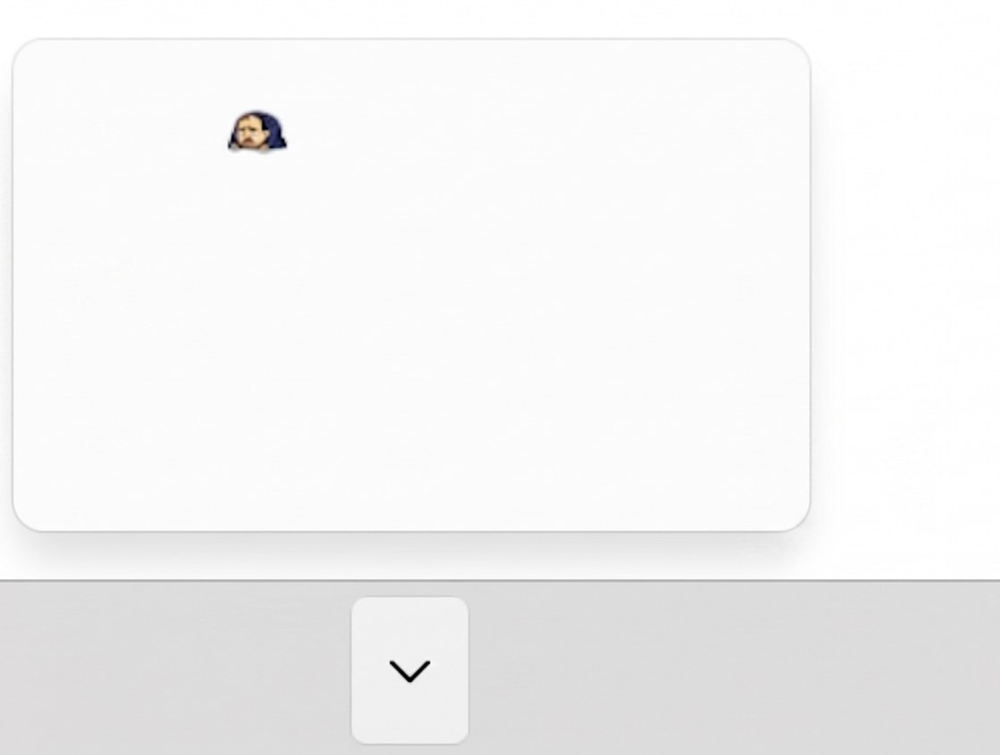
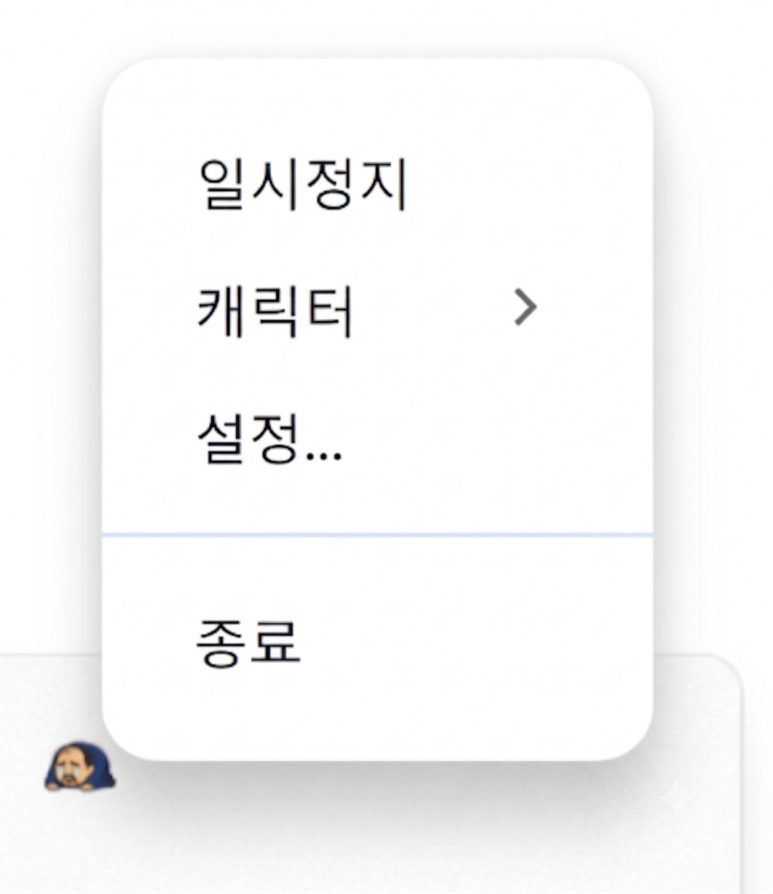

⚠️ "Windows의 PC 보호" 파란 창이 뜨면 (정상입니다)
아직 서명 전이라 뜨는 경고입니다. 바이러스가 아닙니다 — 창에서 추가 정보를 누른 뒤 실행을 누르면 됩니다.
-
1다운로드한 .exe를 실행하면 “Windows의 PC 보호” 파란 창이 뜹니다. 왼쪽의 추가 정보를 누르세요.

‘추가 정보’를 누르세요
-
2실행 버튼이 나타납니다. 눌러서 설치를 시작하세요. 게시자가 ‘알 수 없음’인 건 아직 서명 전이라 그럴 뿐, 바이러스가 아닙니다.

‘실행’을 눌러 설치 시작
-
3설치가 진행됩니다. 잠시만 기다리세요.

설치가 진행됩니다
-
4설치가 끝나면 작업 표시줄 오른쪽 트레이에 상사 아이콘이 나타납니다. 안 보이면 ∧를 눌러 숨은 아이콘을 펼치세요.

트레이에 나타난 상사 아이콘
-
5완료! 트레이 아이콘을 우클릭 → 설정…에서 캐릭터·이름·크기·위치를 바꿀 수 있어요. 화나서 두드릴수록 굽신거립니다.

우클릭 → 설정…에서 상사 꾸미기
왜 경고가 뜨나요?
개별 개발자용 Windows 코드서명은 비용·심사 문제로 아직 준비 중입니다. 다운로드가 늘면 경고는 점차 사라지며, 소스 공개 후 무료 서명(SignPath) 도입도 검토 중입니다. 앱은 여전히 키 입력 내용을 기록하거나 외부로 전송하지 않습니다.